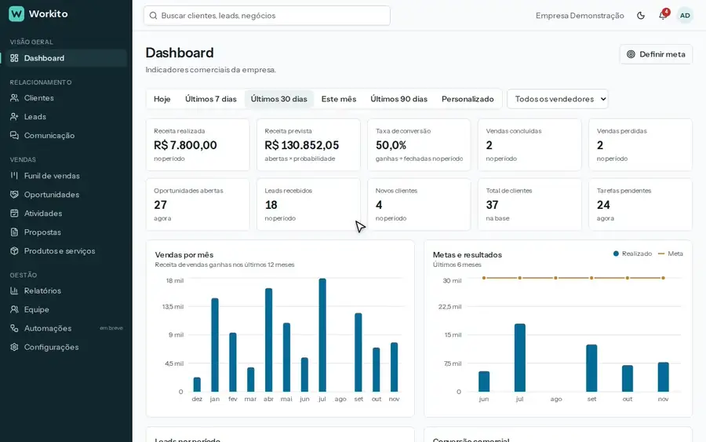

Em desenvolvimento, 5 de 7 fases prontas
Workito
CRM SaaS para equipes comerciais. Cada empresa tem seus dados isolados, cinco perfis de acesso e o caminho completo do lead até a proposta aprovada.
O que vem no MVP
- Funil de vendasKanban com arrastar e soltar e motivo de perda
- LeadsDuplicados detectados, rodízio e conversão
- ComunicaçãoHistórico de contato por canal
- PropostasItens, desconto controlado e PDF
- AtividadesLista, calendário e alerta de atraso
- Dashboard10 indicadores, 7 gráficos e metas
- PlanilhasImporta CSV, exporta CSV, Excel e PDF
- Análise de documentosLeitura de contratos e propostas recebidas
- Análise de feedbackO que os clientes elogiam e reclamam
- Next.js 16
- React 19
- TypeScript
- PostgreSQL
- Prisma
- Docker
